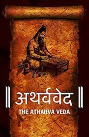

| HOME | INTRODUCTION | HINDUISIM | WARRIOR | SCIENCE | CONTACT US |
The Atharva Veda (Sanskrit: अथर्ववेदः, Atharvavedaḥ from atharvāṇas and veda, meaning "knowledge") is the "knowledge storehouse of atharvāṇas, the procedures for everyday life". The text is the fourth Veda, but has been a late addition to the Vedic scriptures of Hinduism.
The language of the Atharvaveda is different from Vedic Sanskrit, preserving pre-Vedic Indo-European archaisms. It is a collection of 730 hymns with about 6,000 mantras, divided into 20 books. About a sixth of the Atharvaveda texts adapts verses from the Rigveda, and except for Books 15 and 16, the text is in poem form deploying a diversity of Vedic matters. Two different recensions of the text – the Paippalāda and the Śaunakīya – have survived into modern times. Reliable manuscripts of the Paippalada edition were believed to have been lost, but a well-preserved version was discovered among a collection of palm leaf manuscripts in Odisha in 1957.
The Atharvaveda is sometimes called the "Veda of magical formulas", a description considered incorrect by other scholars. In contrast to the 'hieratic religion' of the other three Vedas, the Atharvaveda is said to represent a 'popular religion', incorporating not only formulas for magic, but also the daily rituals for initiation into learning (upanayana), marriage and funerals. Royal rituals and the duties of the court priests are also included in the Atharvaveda.
The Atharvaveda was likely compiled as a Veda contemporaneously with Samaveda and Yajurveda, or about 1200 BC – 1000 BC. Along with the Samhita layer of text, the Atharvaveda includes a Brahmana text, and a final layer of the text that covers philosophical speculations. The latter layer of Atharvaveda text includes three primary Upanishads, influential to various schools of Hindu philosophy. These include the Mundaka Upanishad, the Mandukya Upanishad and the Prashna Upanishad.